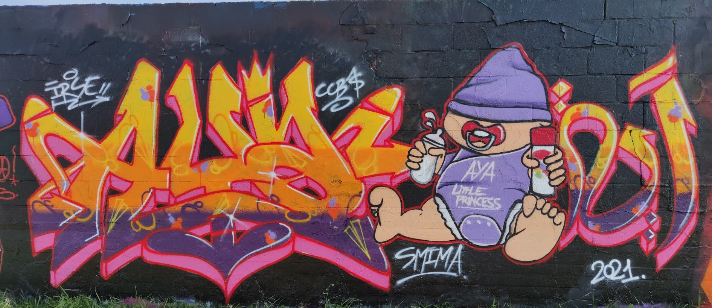
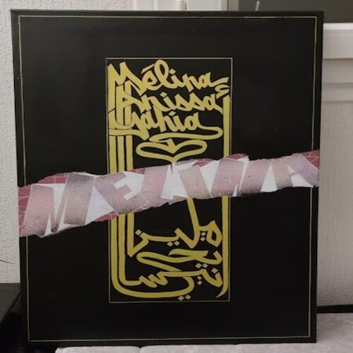
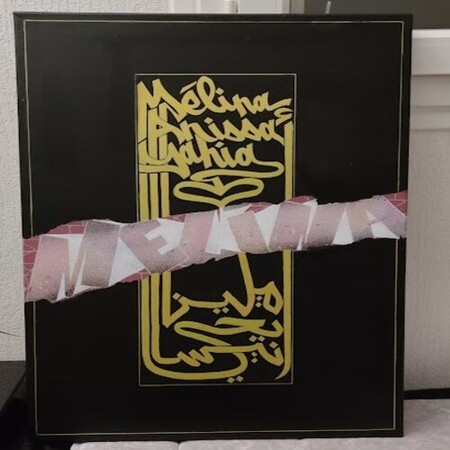
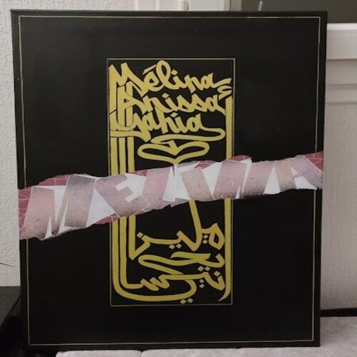

 

Passionné de dessin et de la culture HIP HOP, je suis naturellement tombé dans l'univers du graffiti en 2006 grâce à mon frère tombé dans la marmite bien avant moi. Des petits tags sur les murs et les tables de l'école au graffiti sur tous les supports possibles, il m'a fallu bien des années pour développer mon style et maitrisé toutes les techniques.
À la suite de toutes mes expériences urbaines en France et à l'étranger, je suis passé à des plus petits supports tel que des T-shirts ou des toiles. Etant toujours fidèle à mes aérosols, j'ai dû m'adapter à ces nouveaux supports et apprendre de nouvelle technique afin de faire des oeuvres un peu plus techniques et plus propre. Malgré ce passage à la toile, je n'oublie pas mes fondamentaux et c'est un toujours un plaisir voir même un besoin de faire quelques fresques en été accompagné d'un beau soleil, quelques potes et quelques guezmer sur le barbeuk!
Étant de confession musulmane, je me passione également pour la calligraphie arabe et j'aime mélanger le style graffiti et calligraphie arabe. Vous l'aurez compris, je peux m'adapter à plusieurs style mais je me fixe néanmoins des limites. Je ne ferai jamais de peinture à caractères sexuels ou obscène. J'évite également de dessiner le visage des personnages que je peux faire. Certes, vous verrez quelques photos ou les visages sont faits mais sachez que ces photos datent d'une autre époque de ma vie...
Afin de faire profiter ceux qui aime mon style, je propose mes toiles à des prix très abordable. Plus intéressants encore, je vous propose de personnaliser une toile ou tout autre support selon vos envies et vos goûts. Plus d'infos dans la partie "produits". N'hésitez à me contacter pour plus d'informations. Je vous laisse avec un petit florilège de certaines de mes oeuvres et celle de mon crew. À très vite!
